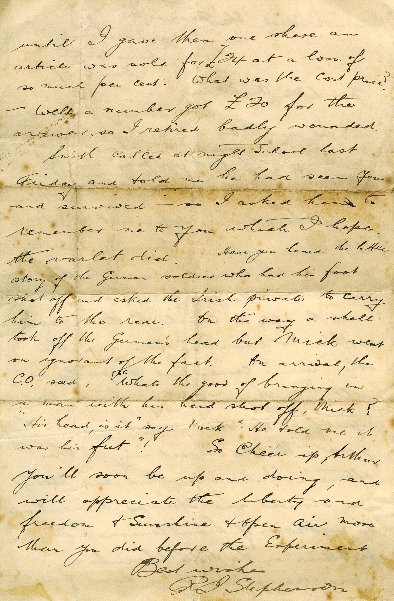

“Since There’s No Help,” by Michael Drayton (1563-1631)
It may be a bad augury to begin with a poem by a loser, but there it is. Drayton, a contemporary and possible acquaintance of the Bard, evidently had come to the unhappy end of an affair when he penned this sonnet. He begins with a show of stoic indifference: “. . . you get no more of me,” but that can’t last. In the last six lines he shows his true feelings with a series of personifications of the dying figures of Love, Passion, Faith, and Innocence, which he pleads can be saved from their fate by the lady’s kindness.
“How Do I Love Thee,” by Elizabeth Barrett Browning (1806-1861)
How do I love thee? Let me count the ways. I love thee to the depth and breadth and height My soul can reach, when feeling out of sight For the ends of being and ideal grace. I love thee to the level of every day’s Most quiet need, by sun and candle-light. I love thee freely, as men strive for right. I love thee purely, as they turn from praise. I love thee with the passion put to use In my old griefs, and with my childhood’s faith. I love thee with a love I seemed to lose With my lost saints. I love thee with the breath, Smiles, tears, of all my life; and, if God choose, I shall but love thee better after death.
“A Red, Red Rose,” by Robert Burns (1759-1796)
O my Luve is like a red, red rose That’s newly sprung in June; O my Luve is like the melody That’s sweetly played in tune. So fair art thou, my bonnie lass, So deep in luve am I; And I will luve thee still, my dear, Till a’ the seas gang dry. Till a’ the seas gang dry, my dear, And the rocks melt wi’ the sun; I will love thee still, my dear, While the sands o’ life shall run. And fare thee weel, my only luve! And fare thee weel awhile! And I will come again, my luve, Though it were ten thousand mile.